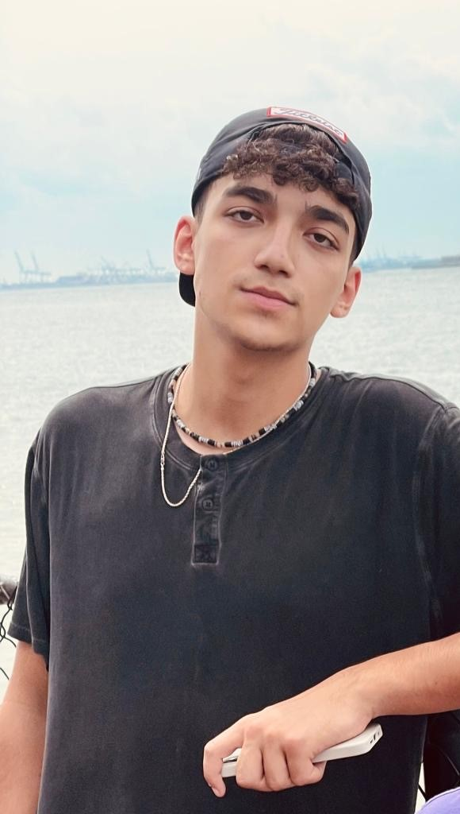

עידן אלכסנדר
עידן הוא חייל בודד מארה"ב, נחטף בגיל 19 וחגג את יום הולדתו ה-20 בשבי.
בכיתה י"ב עידן הודיע להוריו שהוא מצטרף לתוכנית "צבר" שבמסגרתה יעלה לארץ וירשת בצה"ל ומשפחתו תמחה בבחירתו.
בסוכות, אמא שלו יעל באה לבקר אותו בישראל, וביום שישי ה6 באוקטובר דיברה איתו בשיחת וידאו, בה הוא ציין שהוא עולה לשמירה למחרת בבוקר.
כשיעל התעוררה בשבת בבוקר לקול האזעקות היא שאלה אותו האם הוא בסדר, הוא ענה לה עם ההודעה "אנחנו אוכלים טילים אבל אל תדאגי אנחנו מוגנים" לאחר מכן הוא התקשר אליה עם קול לחוץ ואמר לה "זה כמו מלחמה".
מאוחר יותר ביום התגלה שאחרי השיחה הזאת 20 מחבלים הגיעו לעמדה שבה הוצב וחטפו אותו.
ב30 בנובמבר 2024 פרסם חמאס סרטון שמראה שעידן עדיין בחיים בשבי.